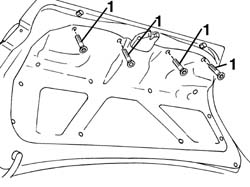
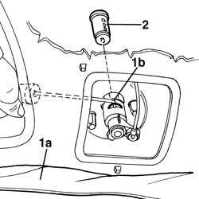

7025B46 boot lid lock block - r+r
- Path
- Procedures > 70 FITTINGS > 7025 COMPARTMENT LIDS > 7025B boot lid > 7025B46 boot lid lock block - r+r
- Kind
- repair procedure (removal / refitting; the operation number is the code)
- Applies to
- all engines; all production periods
- Interactive page
- https://sloeber94.github.io/elrnDB-a156/en/#/3238741
Applies to: all engines; all production periods
Applies to: all engines; all production periods
 Removing
Removing
 Refitting
Refitting1. Open the boot lid and unscrew the lining fastening screws.

Applies to: all engines; all production periods
1. Lower the lining (1a) and move the stop spring (1b).
2. Insert the key in the lock block and remove it.

Applies to: all engines; all production periods
Refitting
RemovingCheck that the lock block is not damaged.
Insert the stop spring in its seat.
Insert the lock block in its seat and fasten its slot with the stop spring.
Reposition and screw the lining.
Check the function of the lock block and the correct operation of the lock control mechanism.